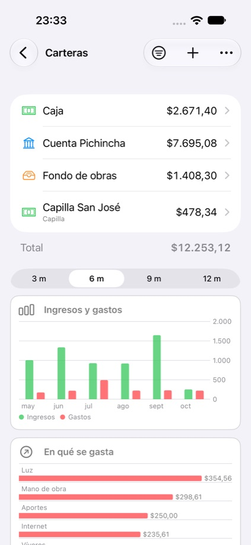
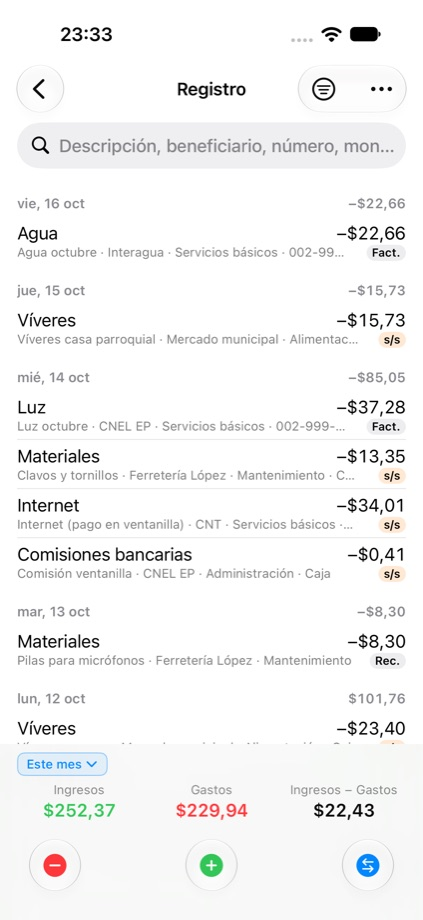
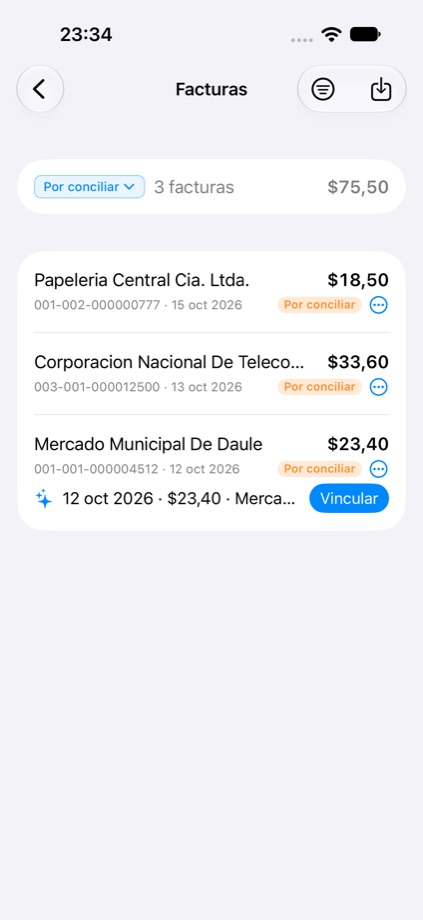
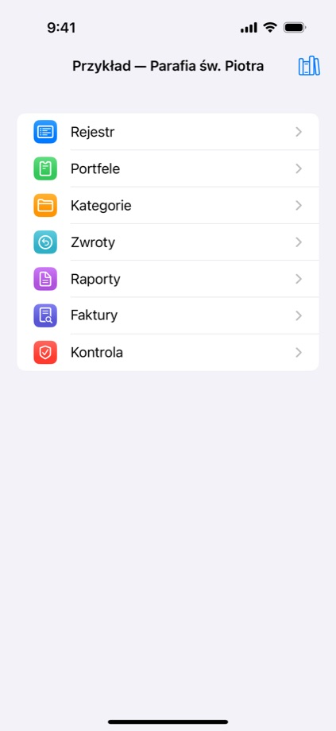
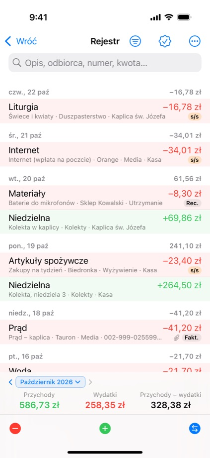

Cuentas claras para
la parroquia, la asociación
y la casa.




Qué ofrece
Registre ingresos y gastos en segundos y sepa cuánto hay en cada caja o cuenta. Prepare informes para la directiva, los socios o el párroco.
- Varios libros y carteras (efectivo, banco, fondos), transferencias y arqueo.
- Roles para el equipo: cada uno ve y edita lo que le corresponde.
- Facturas del SRI: la app propone el gasto que corresponde a cada factura.
- Informes en PDF y CSV (Excel), auditoría de movimientos.
- Sin publicidad, sin analítica. Sus datos están en su dispositivo y, si lo desea, en su iCloud.
Cómo se usa
Preguntas y sugerencias: fidescuenta@icloud.com.
Soporte · Privacidad · Apoyar · Archivos de demostración
Otros proyectos del autor
Clear accounts for
the parish, the club
and the home.

What it offers
Record income and expenses in seconds and know how much there is in every cash box or account. Prepare reports for the board, the members or the parish priest.
- Multiple books and wallets (cash, bank, funds), transfers and cash counts.
- Team roles: everyone sees and edits what is theirs.
- SRI invoices (Ecuador): the app suggests the matching expense for each invoice.
- PDF and CSV (Excel) reports, transaction review.
- No ads, no analytics. Your data stays on your device and, if you choose, in your iCloud.
How it works
Videos in Spanish (iPhone).
Questions and suggestions: fidescuenta@icloud.com.
Support · Privacy · Donate · Demo files
Other projects by the author
Przejrzyste finanse
parafii, stowarzyszenia
i domu.



Co w aplikacji
Wpisujesz wpływy i wydatki w kilka sekund i wiesz, ile jest w każdej kasie i na każdym koncie. Raporty dla rady, członków czy proboszcza gotowe od ręki.
- Wiele ksiąg i portfeli (gotówka, bank, fundusze), przelewy i kontrola kasy.
- Role w zespole: każdy widzi i edytuje to, co do niego należy.
- Faktury z SRI (Ekwador): aplikacja podpowiada wydatek pasujący do faktury.
- Raporty PDF i CSV (Excel), kontrola wpisów.
- Bez reklam, bez analityki. Dane są na Twoim urządzeniu i — jeśli chcesz — w Twoim iCloud.
Jak używać
Filmy po hiszpańsku (iPhone).
Pytania i uwagi: fidescuenta@icloud.com.